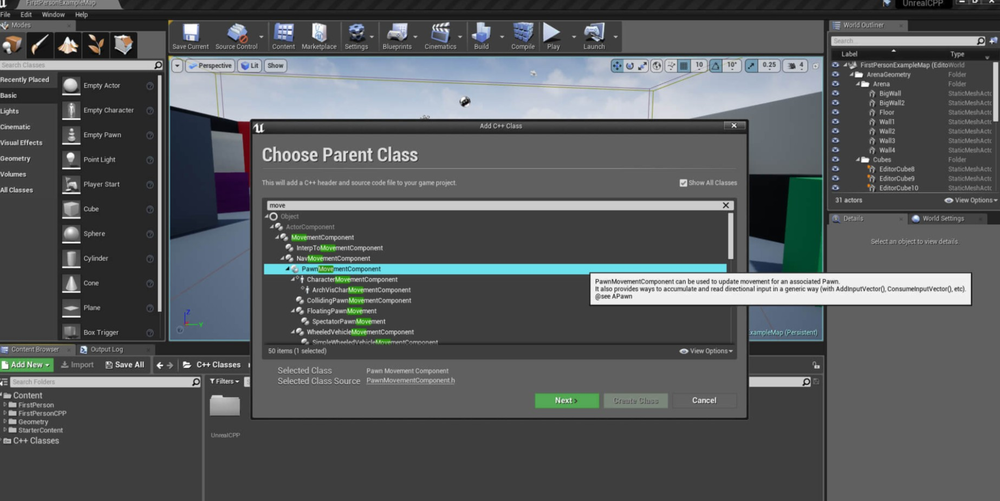

29. 带碰撞和粒子特效的角色操控
效果图：

在本教程中，创建一个新的 C++ 类，继承 UPawnMovementComponent 的父类，并将其命名为 CollidingPawnMovementComponent 。我们将在稍后创建的 pawn 中使用这个组件。

CollidingPawnMovementComponent.h
#pragma once
#include "CoreMinimal.h"
#include "GameFramework/PawnMovementComponent.h"
#include "CollidingPawnMovementComponent.generated.h"
UCLASS()
class UNREALCPP_API UCollidingPawnMovementComponent : public UPawnMovementComponent
{
GENERATED_BODY()
public:
virtual void TickComponent(float DeltaTime, enum ELevelTick TickType, FActorComponentTickFunction *ThisTickFunction) override;
};
cpp 文件会把所有的逻辑放到 Tick 函数中来检查我们是否击中了什么。首先，确保它仍然是有效的移动。并把下面的 if 语句添加到 Tick 函数中。
void UCollidingPawnMovementComponent::TickComponent(float DeltaTime, enum ELevelTick TickType, FActorComponentTickFunction *ThisTickFunction)
{
Super::TickComponent(DeltaTime, TickType, ThisTickFunction);
// Make sure that everything is still valid, and that we are allowed to move.
if (!PawnOwner || !UpdatedComponent || ShouldSkipUpdate(DeltaTime))
{
return;
}
};
接下来，我们想要得到 Pawn 产生的向量。我们稍后创建我们的 Pawn actor，但是 pawn 会在每一帧都生成一个位置向量。首先，我们想要通过使用 ConsumeInputVector 函数获得帧的向量。然后截断向量到 1.0f（不超过 1.f） ，然后乘以 DeltaTime 和 150.f 。这确保 pawn 在世界上以每秒 150 单位的最大速度平稳移动。然后我们检查移动量是否接近于 0，如果不是接近于 0（条件判断是 !false 才进入分支），我们会先安全移动 pawn ，如果它撞到了一个阻挡组件，则让它沿这被撞物体边缘移动 。
CollidingPawnMovementComponent.cpp
void UCollidingPawnMovementComponent::TickComponent(float DeltaTime, enum ELevelTick TickType, FActorComponentTickFunction *ThisTickFunction)
{
Super::TickComponent(DeltaTime, TickType, ThisTickFunction);
// Make sure that everything is still valid, and that we are allowed to move.
if (!PawnOwner || !UpdatedComponent || ShouldSkipUpdate(DeltaTime))
{
return;
}
// Get (and then clear) the movement vector that we set in ACollidingPawn::Tick
FVector DesiredMovementThisFrame = ConsumeInputVector().GetClampedToMaxSize(1.0f) * DeltaTime * 150.0f;
if (!DesiredMovementThisFrame.IsNearlyZero())
{
FHitResult Hit;
SafeMoveUpdatedComponent(DesiredMovementThisFrame, UpdatedComponent->GetComponentRotation(), true, Hit);
// If we bumped into something, try to slide along it
if (Hit.IsValidBlockingHit())
{
SlideAlongSurface(DesiredMovementThisFrame, 1.f - Hit.Time, Hit.Normal, Hit);
}
}
};
现在，继续，创建一个新的 C++ 类，它继承自父类 Pawn ，并将其命名为 CollidingPawn 。
在头文件中，我们要声明将在 .cpp 文件中使用的变量。我们将声明我们的移动函数以及我们的粒子系统和新创建的 UCollidingPawnMovementComponent 。
我们将通过按键触发粒子。我们将在后面设置输入选项。
下面是最终的 CollidingPawn.h 文件。
#pragma once
#include "CoreMinimal.h"
#include "GameFramework/Pawn.h"
#include "CollidingPawn.generated.h"
UCLASS()
class UNREALCPP_API ACollidingPawn : public APawn
{
GENERATED_BODY()
public:
// Sets default values for this pawn's properties
ACollidingPawn();
protected:
// Called when the game starts or when spawned
virtual void BeginPlay() override;
public:
// Called every frame
virtual void Tick( float DeltaSeconds ) override;
// Called to bind functionality to input
virtual void SetupPlayerInputComponent(class UInputComponent* InputComponent) override;
UParticleSystemComponent* OurParticleSystem;
class UCollidingPawnMovementComponent* OurMovementComponent;
virtual UPawnMovementComponent* GetMovementComponent() const override;
void MoveForward(float AxisValue);
void MoveRight(float AxisValue);
void Turn(float AxisValue);
void ParticleToggle();
};
在 .cpp 文件中，首先我们要确保 #include 了将在整个代码中使用的所有必要脚本（头文件）。下面你将看到我们添加到 .cpp 文件顶部的组件和助手脚本，它们位于 pawn 的头文件下面。
#include "CollidingPawn.h"
// include these in your file
#include "Camera/CameraComponent.h"
#include "CollidingPawnMovementComponent.h"
#include "Components/InputComponent.h"
#include "Components/StaticMeshComponent.h"
#include "Components/SphereComponent.h"
#include "ConstructorHelpers.h"
#include "GameFramework/SpringArmComponent.h"
#include "Particles/ParticleSystemComponent.h"
在我们的 pawn 的构造函数中，我们将设置所有必要的组件。首先，添加一个 USphereComponent 作为 RootComponent 。
ACollidingPawn::ACollidingPawn()
{
...
// Our root component will be a sphere that reacts to physics
USphereComponent* SphereComponent = CreateDefaultSubobject<USphereComponent>(TEXT("RootComponent"));
RootComponent = SphereComponent;
SphereComponent->InitSphereRadius(40.0f);
SphereComponent->SetCollisionProfileName(TEXT("Pawn"));
}
接下来，我们将添加一个球体网格来表示和可视化我们的 pawn。在代码中，我们使用ConstructorHelper 通过提供路径来查找球体网格。
ACollidingPawn::ACollidingPawn()
{
...
// Create and position a mesh component so we can see where our sphere is
UStaticMeshComponent* SphereVisual = CreateDefaultSubobject<UStaticMeshComponent>(TEXT("VisualRepresentation"));
SphereVisual->SetupAttachment(RootComponent);
static ConstructorHelpers::FObjectFinder<UStaticMesh> SphereVisualAsset(TEXT("/Game/StarterContent/Shapes/Shape_Sphere.Shape_Sphere"));
if (SphereVisualAsset.Succeeded())
{
SphereVisual->SetStaticMesh(SphereVisualAsset.Object);
SphereVisual->SetRelativeLocation(FVector(0.0f, 0.0f, -40.0f));
SphereVisual->SetWorldScale3D(FVector(0.8f));
}
}
接下来，我们将粒子系统添加到 pawn 中。默认情况下，我们将设置它的 bAutoActivate 为 false，这样当我们开始播放时它就不会启动火焰。我们将用一个按键来控制它。另外，请注意，我们将这个粒子系统附加到 SphereVisual 网格上，而不是 RootComponent 。
ACollidingPawn::ACollidingPawn()
{
...
// Create a particle system that we can activate or deactivate
OurParticleSystem = CreateDefaultSubobject<UParticleSystemComponent>(TEXT("MovementParticles"));
OurParticleSystem->SetupAttachment(SphereVisual);
OurParticleSystem->bAutoActivate = false;
OurParticleSystem->SetRelativeLocation(FVector(-20.0f, 0.0f, 20.0f));
static ConstructorHelpers::FObjectFinder<UParticleSystem> ParticleAsset(TEXT("/Game/StarterContent/Particles/P_Fire.P_Fire"));
if (ParticleAsset.Succeeded())
{
OurParticleSystem->SetTemplate(ParticleAsset.Object);
}
}
接下来，添加一个用于摄像机运动控制的 USpringArmComponent (弹簧臂组件)，并将其附加到 RootComponent
ACollidingPawn::ACollidingPawn()
{
...
// Use a spring arm to give the camera smooth, natural-feeling motion.
USpringArmComponent* SpringArm = CreateDefaultSubobject<USpringArmComponent>(TEXT("CameraAttachmentArm"));
SpringArm->SetupAttachment(RootComponent);
SpringArm->RelativeRotation = FRotator(-45.f, 0.f, 0.f);
SpringArm->TargetArmLength = 400.0f;
SpringArm->bEnableCameraLag = true;
SpringArm->CameraLagSpeed = 3.0f;
}
接着我们创建一个 UCameraComponent，并将其附加到我们的 SpringArm
ACollidingPawn::ACollidingPawn()
{
...
// Create a camera and attach to our spring arm
UCameraComponent* Camera = CreateDefaultSubobject<UCameraComponent>(TEXT("ActualCamera"));
Camera->SetupAttachment(SpringArm, USpringArmComponent::SocketName);
}
接下来，让这个 pawn 立即控制玩家（成为玩家 0）。
ACollidingPawn::ACollidingPawn()
{
...
// Take control of the default player
AutoPossessPlayer = EAutoReceiveInput::Player0;
}
然后添加我们之前自定义的碰撞移动组件到该 pawn 上
ACollidingPawn::ACollidingPawn()
{
...
// Create an instance of our movement component, and tell it to update our root component.
OurMovementComponent = CreateDefaultSubobject<UCollidingPawnMovementComponent>(TEXT("CustomMovementComponent"));
OurMovementComponent->UpdatedComponent = RootComponent;
}
下面是最终的 ACollidingPawn() 函数。
// Sets default values
ACollidingPawn::ACollidingPawn()
{
// Set this pawn to call Tick() every frame. You can turn this off to improve performance if you don't need it.
PrimaryActorTick.bCanEverTick = true;
// Our root component will be a sphere that reacts to physics
USphereComponent* SphereComponent = CreateDefaultSubobject<USphereComponent>(TEXT("RootComponent"));
RootComponent = SphereComponent;
SphereComponent->InitSphereRadius(40.0f);
SphereComponent->SetCollisionProfileName(TEXT("Pawn"));
// Create and position a mesh component so we can see where our sphere is
UStaticMeshComponent* SphereVisual = CreateDefaultSubobject<UStaticMeshComponent>(TEXT("VisualRepresentation"));
SphereVisual->SetupAttachment(RootComponent);
static ConstructorHelpers::FObjectFinder<UStaticMesh> SphereVisualAsset(TEXT("/Game/StarterContent/Shapes/Shape_Sphere.Shape_Sphere"));
if (SphereVisualAsset.Succeeded())
{
SphereVisual->SetStaticMesh(SphereVisualAsset.Object);
SphereVisual->SetRelativeLocation(FVector(0.0f, 0.0f, -40.0f));
SphereVisual->SetWorldScale3D(FVector(0.8f));
}
// Create a particle system that we can activate or deactivate
OurParticleSystem = CreateDefaultSubobject<UParticleSystemComponent>(TEXT("MovementParticles"));
OurParticleSystem->SetupAttachment(SphereVisual);
OurParticleSystem->bAutoActivate = false;
OurParticleSystem->SetRelativeLocation(FVector(-20.0f, 0.0f, 20.0f));
static ConstructorHelpers::FObjectFinder<UParticleSystem> ParticleAsset(TEXT("/Game/StarterContent/Particles/P_Fire.P_Fire"));
if (ParticleAsset.Succeeded())
{
OurParticleSystem->SetTemplate(ParticleAsset.Object);
}
// Use a spring arm to give the camera smooth, natural-feeling motion.
USpringArmComponent* SpringArm = CreateDefaultSubobject<USpringArmComponent>(TEXT("CameraAttachmentArm"));
SpringArm->SetupAttachment(RootComponent);
SpringArm->RelativeRotation = FRotator(-45.f, 0.f, 0.f);
SpringArm->TargetArmLength = 400.0f;
SpringArm->bEnableCameraLag = true;
SpringArm->CameraLagSpeed = 3.0f;
// Create a camera and attach to our spring arm
UCameraComponent* Camera = CreateDefaultSubobject<UCameraComponent>(TEXT("ActualCamera"));
Camera->SetupAttachment(SpringArm, USpringArmComponent::SocketName);
// Take control of the default player
AutoPossessPlayer = EAutoReceiveInput::Player0;
// Create an instance of our movement component, and tell it to update our root component.
OurMovementComponent = CreateDefaultSubobject<UCollidingPawnMovementComponent>(TEXT("CustomMovementComponent"));
OurMovementComponent->UpdatedComponent = RootComponent;
}
用所有必要的组件设置完 pawn 后，让我们继续在 SetupPlayerInputComponent 函数中将输入绑定到 pawn。但是，首先让我们进入编辑器并创建 Action 和 Axis 输入。在 Action Mappings 中，添加一个名为 ParticleToggle 的映射，并将其绑定到 P 键。在轴映射中创建 MoveForward 、MoveRight 和 Turn 输入。下面是它们对应的值。
# MoveForward
W: Scale 1.0
S: Scale -1.0
Up: Scale 1.0
Down: Scale -1.0
Gamepad Left Thumbstick Y-Axis: Scale 1.0
# MoveRight
A: Scale -1.0
D: Scale 1.0
Left: Scale -1.0
Right: Scale 1.0
Gamepad Left Thumbstick X-Axis: Scale 1.0
# Turn
Mouse X: Scale 1.0
让我们继续在 SetupPlayerInputComponent 函数中将输入绑定到我们的 pawn 。我们的输入将绑定到代码后面定义的函数。
void ACollidingPawn::SetupPlayerInputComponent(class UInputComponent* InputComponent)
{
Super::SetupPlayerInputComponent(InputComponent);
InputComponent->BindAction("ParticleToggle", IE_Pressed, this, &ACollidingPawn::ParticleToggle);
InputComponent->BindAxis("MoveForward", this, &ACollidingPawn::MoveForward);
InputComponent->BindAxis("MoveRight", this, &ACollidingPawn::MoveRight);
InputComponent->BindAxis("Turn", this, &ACollidingPawn::Turn);
}
现在，我们要设置 Action 函数和 Axis 函数。
MoveForward 函数根据它的正向向量将 pawn 向前移动。
MoveRight 函数根据它的 RightVector 向前移动我们的 pawn。
Turn 函数使摄像机围绕 pawn 旋转。
ParticleToggle 函数是一个简单的函数，它将在真和假之间切换火粒子的活动状态。
void ACollidingPawn::MoveForward(float AxisValue)
{
if (OurMovementComponent && (OurMovementComponent->UpdatedComponent == RootComponent))
{
OurMovementComponent->AddInputVector(GetActorForwardVector() * AxisValue);
}
}
void ACollidingPawn::MoveRight(float AxisValue)
{
if (OurMovementComponent && (OurMovementComponent->UpdatedComponent == RootComponent))
{
OurMovementComponent->AddInputVector(GetActorRightVector() * AxisValue);
}
}
void ACollidingPawn::Turn(float AxisValue)
{
FRotator NewRotation = GetActorRotation();
NewRotation.Yaw += AxisValue;
SetActorRotation(NewRotation);
}
void ACollidingPawn::ParticleToggle()
{
if (OurParticleSystem && OurParticleSystem->Template)
{
OurParticleSystem->ToggleActive();
}
}
最后，拖放你的 pawn 到游戏场景中，你应该能够向本页面开头那样围绕世界移动球体并释放火焰粒子特效了。